| name | input | output |
|---|
AtoB_339_0.png | | | AtoB_445_0.png | | | AtoB_702_0.png | | | AtoB_183_0.png | 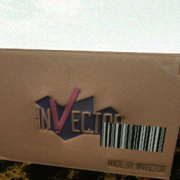 | | AtoB_297_0.png | | | AtoB_553_0.png | | | AtoB_697_0.png | | | AtoB_299_0.png | | | AtoB_601_0.png |  |  | AtoB_691_0.png | | | AtoB_185_0.png | | | AtoB_24_0.png | | | AtoB_600_0.png | |  | AtoB_586_0.png | | | AtoB_389_0.png | | | AtoB_433_0.png | | | AtoB_93_0.png | | | AtoB_452_0.png |  | | AtoB_191_0.png | | | AtoB_487_0.png | | | AtoB_242_0.png | | | AtoB_148_0.png | | | AtoB_291_0.png | |  | AtoB_550_0.png | | | AtoB_444_0.png | | | AtoB_194_0.png | | | AtoB_645_0.png | | | AtoB_488_0.png | | | AtoB_596_0.png | | | AtoB_494_0.png | |  | AtoB_44_0.png | | | AtoB_69_0.png | |  | AtoB_585_0.png | | | AtoB_689_0.png | | | AtoB_6_0.png | | | AtoB_342_0.png | | | AtoB_68_0.png | | | AtoB_447_0.png | | | AtoB_239_0.png |  | | AtoB_535_0.png | | | AtoB_651_0.png | | | AtoB_593_0.png | | | AtoB_698_0.png | | | AtoB_146_0.png | | | AtoB_397_0.png | | | AtoB_149_0.png | | | AtoB_641_0.png | |  | AtoB_132_0.png | | | AtoB_33_0.png | | | AtoB_401_0.png | | | AtoB_182_0.png | | | AtoB_134_0.png | | | AtoB_384_0.png | | | AtoB_248_0.png | |  | AtoB_394_0.png | | | AtoB_14_0.png | | | AtoB_333_0.png | | | AtoB_390_0.png | | | AtoB_594_0.png | | | AtoB_43_0.png | | | AtoB_486_0.png | | | AtoB_293_0.png | | | AtoB_589_0.png | | | AtoB_246_0.png | | | AtoB_699_0.png | | | AtoB_141_0.png | | | AtoB_388_0.png | | | AtoB_188_0.png | | | AtoB_492_0.png | | 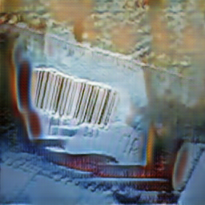 | AtoB_197_0.png |  | | AtoB_686_0.png | | | AtoB_48_0.png | | | AtoB_95_0.png | | | AtoB_636_0.png | | | AtoB_1_0.png | | | AtoB_4_0.png | | | AtoB_599_0.png | | | AtoB_344_0.png |  | | AtoB_695_0.png | | | AtoB_443_0.png | |  | AtoB_195_0.png | | | AtoB_130_0.png | | 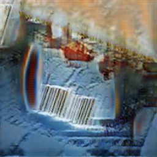 | AtoB_34_0.png | | | AtoB_241_0.png | | | AtoB_295_0.png | 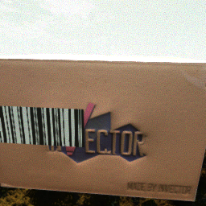 | | AtoB_284_0.png |  | | AtoB_143_0.png | | | AtoB_5_0.png | | | AtoB_538_0.png | | | AtoB_595_0.png | | | AtoB_351_0.png | | | AtoB_9_0.png | | | AtoB_638_0.png | | | AtoB_603_0.png | | | AtoB_58_0.png | | | AtoB_652_0.png | |  | AtoB_485_0.png | | | AtoB_448_0.png | | | AtoB_639_0.png | | | AtoB_23_0.png | | | AtoB_231_0.png |  | | AtoB_54_0.png | | | AtoB_189_0.png | | | AtoB_335_0.png | | | AtoB_534_0.png | | | AtoB_643_0.png | | | AtoB_435_0.png | | | AtoB_98_0.png | | | AtoB_688_0.png | | | AtoB_501_0.png | | | AtoB_386_0.png | | 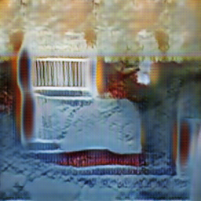 | AtoB_703_0.png |  | | AtoB_647_0.png | | | AtoB_232_0.png | | | AtoB_343_0.png | | | AtoB_99_0.png | | | AtoB_548_0.png | | | AtoB_399_0.png | | | AtoB_237_0.png | | 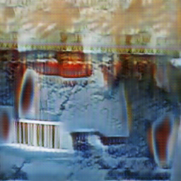 | AtoB_243_0.png | | 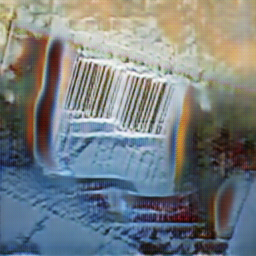 | AtoB_687_0.png | | | AtoB_2_0.png | | | AtoB_541_0.png | | | AtoB_348_0.png | | | AtoB_536_0.png | 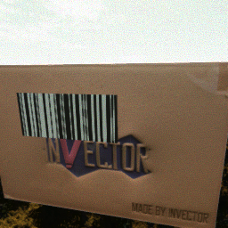 | | AtoB_500_0.png | | | AtoB_140_0.png | | | AtoB_449_0.png | | | AtoB_347_0.png | | | AtoB_644_0.png | | | AtoB_549_0.png | | | AtoB_289_0.png | |  | AtoB_690_0.png | | | AtoB_13_0.png | | | AtoB_341_0.png | |  | AtoB_238_0.png | | | AtoB_446_0.png | | | AtoB_489_0.png | | 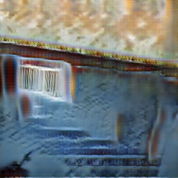 | AtoB_296_0.png | | | AtoB_546_0.png |  | | AtoB_187_0.png | | | AtoB_400_0.png | | | AtoB_450_0.png | | | AtoB_544_0.png | | | AtoB_97_0.png | | 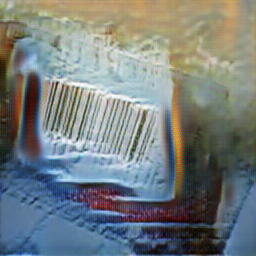 | AtoB_497_0.png | | | AtoB_137_0.png | | | AtoB_650_0.png | |  | AtoB_181_0.png | | | AtoB_438_0.png | | | AtoB_199_0.png | | | AtoB_138_0.png | | | AtoB_300_0.png | | | AtoB_704_0.png | | | AtoB_337_0.png |  | | AtoB_490_0.png | | | AtoB_144_0.png | | | AtoB_131_0.png | | 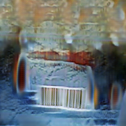 | AtoB_498_0.png | | | AtoB_349_0.png | | | AtoB_3_0.png | | | AtoB_649_0.png | | | AtoB_692_0.png | | | AtoB_592_0.png | | | AtoB_491_0.png | | | AtoB_540_0.png | | | AtoB_552_0.png | | 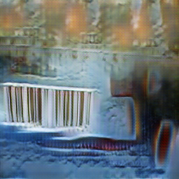 | AtoB_597_0.png | | | AtoB_700_0.png | | | AtoB_336_0.png | | | AtoB_340_0.png | | | AtoB_290_0.png | | | AtoB_637_0.png | | | AtoB_542_0.png | | | AtoB_590_0.png | | | AtoB_285_0.png | | | AtoB_53_0.png | | | AtoB_147_0.png | | | AtoB_63_0.png | | | AtoB_29_0.png | | | AtoB_136_0.png | | | AtoB_247_0.png | | | AtoB_640_0.png | | | AtoB_591_0.png | |  | AtoB_395_0.png | | | AtoB_398_0.png | | | AtoB_282_0.png | | 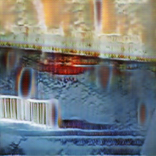 | AtoB_64_0.png | | | AtoB_192_0.png | | | AtoB_551_0.png | | | AtoB_298_0.png | | | AtoB_283_0.png | | | AtoB_244_0.png | | 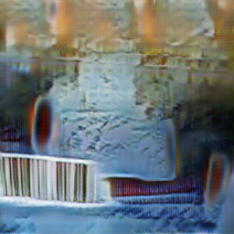 | AtoB_588_0.png | 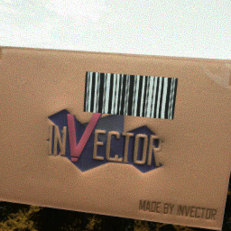 | | AtoB_537_0.png | | 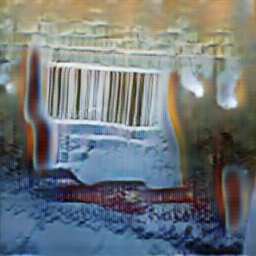 | AtoB_437_0.png |  | | AtoB_292_0.png | | | AtoB_545_0.png | |  | AtoB_133_0.png | |  | AtoB_396_0.png | |  | AtoB_547_0.png | | | AtoB_139_0.png | | 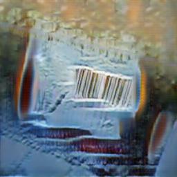 | AtoB_91_0.png | | | AtoB_250_0.png | | | AtoB_198_0.png | |  | AtoB_92_0.png | | | AtoB_648_0.png | | | AtoB_19_0.png | | | AtoB_240_0.png | | | AtoB_383_0.png | | | AtoB_439_0.png | | | AtoB_646_0.png | | | AtoB_28_0.png | | | AtoB_502_0.png | | | AtoB_334_0.png |  | | AtoB_587_0.png | | | AtoB_345_0.png | | | AtoB_654_0.png | | | AtoB_694_0.png | | | AtoB_642_0.png | | | AtoB_196_0.png | |  | AtoB_18_0.png | | | AtoB_451_0.png |  | | AtoB_190_0.png | | | AtoB_495_0.png | | | AtoB_287_0.png | | | AtoB_442_0.png | | | AtoB_38_0.png | | | AtoB_391_0.png | | | AtoB_441_0.png | | | AtoB_436_0.png | | | AtoB_294_0.png | | | AtoB_598_0.png | | | AtoB_602_0.png | | | AtoB_193_0.png | | | AtoB_696_0.png | | | AtoB_234_0.png | | | AtoB_142_0.png |  | | AtoB_346_0.png | | | AtoB_440_0.png | | | AtoB_96_0.png | | | AtoB_434_0.png | | | AtoB_392_0.png | | | AtoB_693_0.png | | | AtoB_338_0.png | | | AtoB_387_0.png | | | AtoB_249_0.png | | | AtoB_653_0.png | | | AtoB_135_0.png | | | AtoB_701_0.png | |  | AtoB_493_0.png | | | AtoB_186_0.png | | | AtoB_288_0.png | | | AtoB_332_0.png | |  | AtoB_39_0.png |  | | AtoB_499_0.png | | 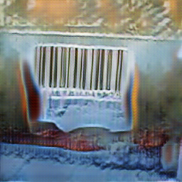 | AtoB_245_0.png | | | AtoB_233_0.png | | | AtoB_543_0.png | | | AtoB_286_0.png | | | AtoB_235_0.png | | | AtoB_484_0.png | | | AtoB_236_0.png | | | AtoB_49_0.png |  | | AtoB_350_0.png | | 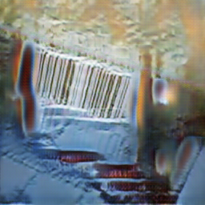 | AtoB_59_0.png | | | AtoB_635_0.png | | 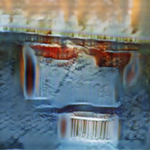 | AtoB_539_0.png | | | AtoB_496_0.png | | | AtoB_145_0.png | | | AtoB_393_0.png |  | | AtoB_385_0.png | | | AtoB_94_0.png | |  | AtoB_184_0.png | | |